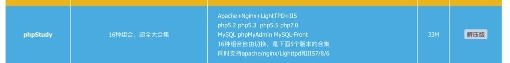
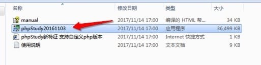
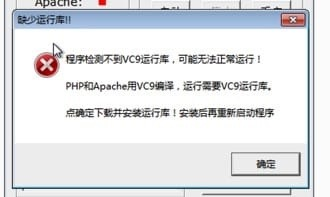
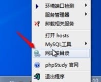
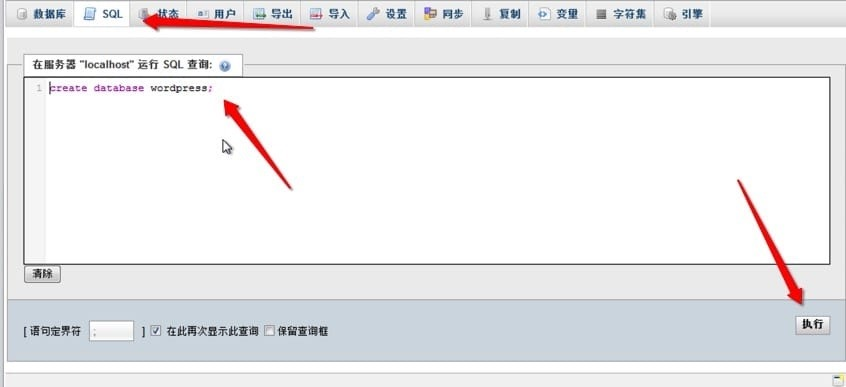

Windows 下的开发环境配置
相比于 Mac、Windows 的配置要简单很多，只需要安装一个软件即可 PHPStudy。
安装 PHPstudy
访问 http://phpstudy.net/download.html 下载页面，下载 PHPstudy。
我们使用 33MB 的解压版：

下载后，将得到的压缩包解压，执行其中的 exe 安装文件。

弹出的确认窗口我们不做更改，直接确认。
并在弹出初始化的窗口中单击 是按钮。
可能会提示读者安装 VC9 运行库：

单击“确定”按钮，会引导我们到下载页面，下载对应的支持库，安装即可。
如果防火墙提示拦截 Apache 和 MySQL 时，允许即可。
安装 WordPress
配置完 WordPress 后，我们开始安装 WordPress。

右击托盘中的 phpstudy 图标，选择其中的网站根目录，就会进入到根目录，删除其中的 l.php 和 phpinfo.php。
打开浏览器，访问 https://wordpress.org/latest.zip ，可以下载到最新的安装包。下载完成后，将其解压，将解压出来的 WordPress 目录中的所有文件都复制，粘贴到我们刚刚打开的网站根目录。
打开 http://localhost/phpMyAdmin 使用用户名 root ，密码 root 登录。
登录后，单击上方的 tab 中的 SQL，输入如下代码，并单击“执行”按钮：
create database wordpress;

这样，我们就成功的创建了一个新的 WordPress 数据库。
接下来，在浏览器中打开 http://localhost 就可以安装了，安装数据库时用到的用户名和密码都是 root，数据库名为 wordpress 。其他安装步骤可以参考 Mac 开发环境配置的相关部分。